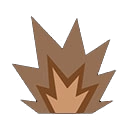
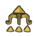
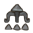
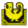
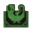

Le Blangonga

Larges bêtes à crocs blanches régnant sur les autres Blango et qui attaquent en meute tout intrus. La musculature et la mobilité du Blangonga lui permettent de frapper rapidement, même sur de la neige fraîche, et de bondir sur de longues distances. Les chasseurs équipés d'armes à longue portée doivent donc rester sur leurs gardes. De grandes défenses sont la marque d'un chef puissant.
Le Blangonga tire parti des régions enneigées pour accroître sa mobilité. Il appelle parfois d'autres Blango pour s'attaquer aux chasseurs imprudents. Redoublez de prudence lorsqu'il est énervé, car il peut envoyer toute la meute sur une cible avec une efficacité redoutable. Faites également attention à son souffle glacé. Détruire ses défenses saperait son autorité auprès des autres Blango.
Présentation du Blangonga
Le Blangonga est une bête à crocs présente dans Monster Hunter Wilds, redoutable habitant des falaises de glace, avec des faux air de Congalala. Recouvert d'une épaisse fourrure blanche immaculée lui permettant de se fondre parfaitement dans son environnement enneigé, ce monstre impressionne par sa carrure massive et sa musculature puissante, typique des grands primates.
Ce monstre des zones glaciaires se déplace avec une agilité surprenante malgré sa corpulence, bondissant d'une plateforme rocheuse à l'autre avec une aisance déconcertante. Ses membres antérieurs particulièrement développés lui confèrent une force de frappe redoutable, capable de briser la glace et le rocher avec la même facilité.
Le comportement du Blangonga se distingue par son utilisation stratégique du froid environnant : il n'hésite pas à se rouler dans la neige pour recouvrir sa fourrure de glace, renforçant ainsi sa défense naturelle avant de charger ses adversaires. Cette capacité d'adaptation à son biome en fait un chasseur redoutablement efficace dans les falaises de glaces de Monster Hunter Wilds.
Sa territorialité marquée et son tempérament agressif en font une rencontre incontournable pour tout chasseur explorant les régions les plus froides de la carte, où il règne en prédateur dominant aux côtés d'autres créatures adaptées au grand froid.
Comment battre le Blangonga
Vaincre le Blangonga demande une bonne connaissance de ses patterns d'attaque ainsi qu'une exploitation intelligente de ses faiblesses élémentaires et de ses vulnérabilités aux altérations d'état, propres à cette bête à crocs des régions glaciaires.
L'élément feu se révèle particulièrement efficace contre ce monstre, sa fourrure épaisse et son environnement glacé le rendant naturellement sensible à la chaleur. L'élément foudre constitue également un excellent choix secondaire. Privilégier l'une de ces deux armes élémentaires permet d'accélérer considérablement chaque affrontement contre cette créature des falaises enneigées.
Concernant les altérations d'état contre le Blangonga, le sommeil se démarque comme particulièrement efficace, offrant une fenêtre idéale pour placer des dégâts massifs pendant que le monstre est endormi. La paralysie, le poison, l'explosion, l'étourdissement et la léthargie complètent efficacement l'arsenal disponible pour maintenir la pression tout au long du combat.
Il est également recommandé de rester attentif à ses phases de charge après qu'il se soit recouvert de neige, moment durant lequel sa défense se trouve temporairement renforcée. Attendre la fin de cette phase avant d'enchaîner les attaques permet de combattre efficacement le Blangonga tout en limitant les risques inutiles.
En combinant une arme adaptée à l'élément feu ou foudre avec une altération d'état comme le sommeil, chaque chasseur peut venir à bout de cette bête à crocs blanches sans difficulté excessive, même lors des premières rencontres dans les zones glaciaires.

Les points faibles du Blangonga
Identifier les points faibles du Blangonga permet d'optimiser significativement chaque combat contre cette bête à crocs des falaises de glace et de réduire le temps nécessaire pour la vaincre.
La tête du Blangonga constitue la zone la plus vulnérable de la créature, affichant le maximum d'étoiles en dégâts tranchants, contondants, projectiles et éléments feu. Viser prioritairement cette partie du corps permet d'infliger un maximum de dégâts à chaque assaut porté, que ce soit avec des armes tranchantes ou contondantes.
Le torse du Blangonga représente également une zone faible efficace, avec une bonne réceptivité aux dégâts tranchants et contondants, bien que légèrement inférieure à la tête.
Les pattes avant, pattes arrière et la queue affichent des valeurs relativement homogènes mais globalement inférieures à la tête et au torse, notamment en dégâts contondants où elles restent tout de même correctement réceptives. Ces zones peuvent être ciblées en complément lorsque la tête est difficile d'accès durant le combat.
Concernant les éléments, le feu reste l'élément le plus efficace sur l'ensemble du corps du Blangonga, suivi par la foudre. L'eau reste faiblement efficace sur certaines zones, tandis que la glace et le dragon s'avèrent totalement inefficaces face à cette créature parfaitement adaptée aux environnements froids.
| Tête | ||||||||
| Torse | ||||||||
| Patte avant gauche | ||||||||
| Patte avant droite | Patte arrière gauche | |||||||
| Patte arrière droite | ||||||||
| Queue |
Faiblesse aux altérations d'état du Blangonga
Le Blangonga présente plusieurs vulnérabilités aux altérations d'état qu'il convient d'exploiter pour faciliter chaque affrontement contre cette bête à crocs des falaises glaciaires.
Le sommeil contre le Blangonga constitue l'altération la plus efficace, permettant de placer une salve de dégâts critiques pendant que le monstre est totalement immobilisé, une stratégie particulièrement rentable en combinaison avec des armes à forte puissance ou des barils explosifs.
La paralysie figure également parmi les altérations recommandées, offrant une opportunité similaire de placer des attaques en toute sécurité sans risquer de contre-attaque. Le poison et le fléau-explosion permettent quant à eux d'infliger des dégâts continus tout au long du combat, utiles pour maintenir la pression même durant les phases plus agressives du monstre.
Enfin, l'étourdissement et la léthargie complètent efficacement cet arsenal d'altérations, permettant respectivement d'interrompre ses attaques ou de réduire sa capacité à récupérer de l'énergie durant l'affrontement.
En intégrant judicieusement ces différentes altérations d'état dans sa stratégie de combat, notamment via des armes dédiées ou des objets spécifiques, il devient possible de maintenir une pression constante sur le Blangonga tout en sécurisant efficacement chaque phase de l'affrontement.
| Afflictions | Efficacité |
|---|---|
 |
|
Objets efficaces et inefficaces contre le Blangonga
Pour affronter efficacement le Blangonga, plusieurs objets efficaces Blangonga se distinguent particulièrement, permettant de tirer parti des faiblesses de cette bête à crocs et de sécuriser chaque phase du combat.
La capsule aveuglante se révèle particulièrement utile, offrant des opportunités d'attaque en désorientant temporairement la créature, notamment lors des phases où le monstre devient particulièrement agressif après s'être recouvert de neige.
Le piège électrochoc ainsi que le piège à fosse complètent efficacement cet arsenal, permettant d'immobiliser durablement la cible pendant une durée suffisante pour concentrer les dégâts sur ses zones les plus vulnérables comme la tête ou le torse.
En revanche, la capsule sonore s'avère totalement inefficace contre le Blangonga et doit être évitée au profit des autres objets mentionnés ci-dessus.
En combinant ces différents équipements avec une stratégie ciblée contre le Blangonga exploitant les faiblesses élémentaires et les altérations d'état propres à cette créature, les chasseurs disposent de tous les outils nécessaires pour venir à bout de ce redoutable habitant des falaises glaciaires avec succès.
| Objets | Efficacité |
|---|---|
 |
|
 |
|
 |
|
 |
Le Blangonga, un combat glacial
La première fois que vous le verrez, il sera en furie et vous devrez l'achevez avec un Gore Magala en prime. Pour ses pattern dans mhwilds, il faudra faire attention à son crachat de glace. Par contre si vous l'attaquez par dérrière, gare au coup de pattes.